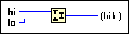

Join Numbers Function
Owning Palette: Data Manipulation Functions
Requires: Base Development System
Creates a number from the component bytes or words.
The connector pane displays the default data types for this polymorphic function.

 Add to the block diagram Add to the block diagram |
 Find on the palette Find on the palette |